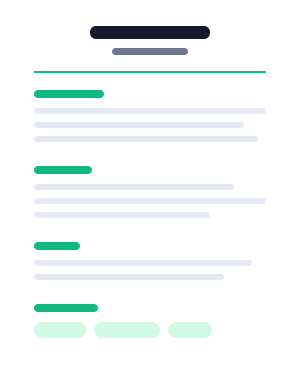
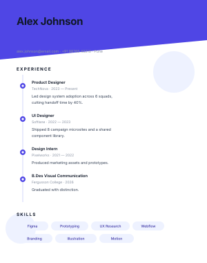
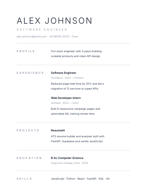
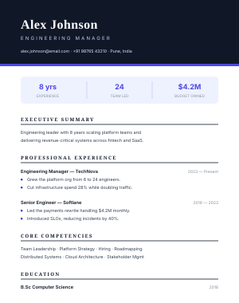
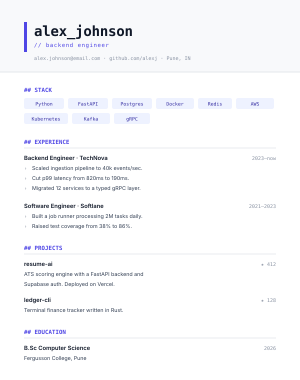
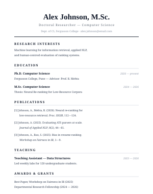

Popular

Professional
A timeless single-column layout with a centered header. The safest choice for any industry.
Use TemplateAll eight layouts are clean, ATS-parseable and print-ready. Select one to continue to the ATS Analyzer.

A timeless single-column layout with a centered header. The safest choice for any industry.
Use Template
A gradient header with a skills sidebar — fresh and confident without being distracting.
Use Template
A bold dark rail with a structured content column. Built for finance, consulting and MNC roles.
Use Template
A timeline layout with accent shapes — ideal for design, marketing and product portfolios.
Use Template
Generous white space with a quiet label column — lets the writing carry the page.
Use Template
A dark masthead with a headline metrics strip — built for senior and leadership roles.
Use Template
Monospace headings with a tech-stack chip row — made for developer and data roles.
Use Template
A serif CV layout with publications and teaching sections — for research and faculty roles.
Use TemplateGo with Professional, Minimal or Corporate for campus placements and corporate roles; Modern or Creative for startups and design teams; Technical for engineering, Executive for leadership and Academic for research applications.